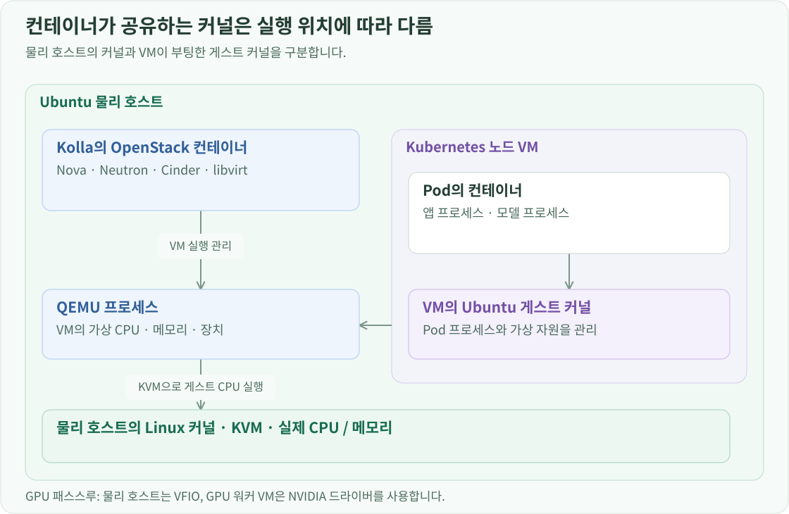

프로젝트 소개 · OpenStack 구축 · 전체 문서
개요
집의 Ubuntu 데스크탑에 OpenStack을 설치하고, 그 위에 Kubernetes 노드로 사용할 VM을 만들었습니다. 이 과정에서 알게 된 핵심은 VM을 생성하고 관리하는 기능과 VM 안의 운영체제를 실행하는 기능이 서로 다른 계층에 있다는 것입니다. Nova는 클라우드의 VM 배치를 조율하고, libvirt는 호스트에서 VM 구성을 관리합니다. 실제 VM은 QEMU 프로세스로 실행되며, QEMU는 Linux 커널의 KVM을 이용해 게스트 CPU 코드를 실행합니다.
이 관계를 이해하면 Kolla가 OpenStack을 컨테이너로 배포하는 이유와 VM이 독립된 커널을 갖는다는 사실을 함께 설명할 수 있습니다. GPU를 물리 호스트에서 VM으로 넘기고, 다시 Kubernetes Pod에서 사용하는 구성도 이 구분을 바탕으로 했습니다.

VM 생성 요청은 Nova에서 libvirt로 이어집니다
Ubuntu 이미지와 vCPU 2개·메모리 4 GiB인 Flavor를 선택해 VM을 생성한다고 가정하면, Nova가 생성 과정을 조율합니다. Placement의 자원 정보를 활용해 실행할 컴퓨트 호스트를 고르고, 이미지·네트워크·볼륨을 담당하는 서비스와 협력합니다. 실행할 호스트가 정해지면 그 호스트의 nova-compute가 libvirt 드라이버를 통해 VM 실행을 요청합니다. 이 프로젝트에서는 물리 호스트 한 대가 컴퓨트 역할을 담당합니다.
QEMU를 실행하려면 CPU와 메모리 크기만으로는 부족합니다. 어떤 디스크로 부팅할지, 어떤 가상 네트워크 장치를 연결할지, 실행 후 어떻게 종료하고 상태를 조회할지도 정해야 합니다. libvirt는 VM의 구성을 정의하고 실행 상태를 제어하는 API와 관리 서비스를 제공합니다. Nova가 전달한 구성을 QEMU의 실행으로 연결하고, 실행 중인 VM의 종료·장치 연결·상태 조회도 처리합니다. libvirt의 QEMU 드라이버가 이 연동을 담당합니다.
따라서 Nova가 다루는 것은 “어느 호스트에 어떤 VM을 만들 것인가”이고, libvirt가 다루는 것은 “그 호스트에서 어떤 구성으로 VM을 실행하고 관리할 것인가”입니다. VM이 부팅된 뒤 프로그램을 실행할 때마다 이 관리 요청을 반복하지는 않습니다.
QEMU는 가상 컴퓨터를 구성하고 KVM은 CPU 실행을 지원합니다
QEMU는 호스트의 사용자 공간에서 실행되는 프로그램입니다. 일반적인 QEMU/KVM 구성에서는 VM마다 QEMU 프로세스가 하나씩 실행됩니다. 이 프로세스가 게스트 메모리를 마련하고, 가상 CPU와 디스크·네트워크 카드 등 게스트 운영체제가 사용할 장치를 구성합니다. VM이 켜져 있는 동안에도 가상 장치와 실행 환경을 계속 유지합니다.
운영체제가 사용할 컴퓨터를 구성했다면 그 안의 CPU 코드를 실행할 방법이 필요합니다. KVM(Kernel-based Virtual Machine)은 Linux 커널의 가상화 기능으로, CPU의 AMD-V나 Intel VT-x 같은 하드웨어 가상화 기능을 이용합니다. QEMU는 /dev/kvm을 열고 VM·가상 CPU 생성, 메모리 등록, 가상 CPU 실행을 요청합니다. 이 인터페이스는 Linux KVM API에 정의되어 있습니다.
KVM이 실행을 지원하는 대상은 VM 안의 게스트 운영체제와 프로그램입니다. QEMU 프로그램 자체는 다른 호스트 프로그램처럼 Linux에서 실행됩니다. libvirt는 QEMU를 관리하고, QEMU는 KVM을 사용한다고 구분하면 세 구성요소의 관계가 명확해집니다.
QEMU는 KVM 없이 CPU를 소프트웨어로 에뮬레이션할 수도 있습니다. 이 프로젝트에서는 실제 CPU의 가상화 기능을 이용하는 QEMU/KVM 조합을 선택했습니다. QEMU의 가속기 설명에서도 가상 컴퓨터를 구성하는 QEMU와 CPU 실행을 지원하는 가속기를 구분합니다.
VM 관리 경로와 CPU·디스크 실행 경로는 다릅니다
구조도에 Nova → libvirt → QEMU → KVM 순서로 표시되어 있어도 모든 데이터가 이 순서로 지나가지는 않습니다.
VM 안에서 일반적인 CPU 명령을 실행할 때는 QEMU의 가상 CPU 스레드가 KVM에 게스트 실행을 요청합니다. 실제 CPU가 하드웨어 가상화 환경에서 코드를 실행하다가 호스트 처리가 필요한 이벤트가 생기면 제어를 돌려줍니다. KVM이 처리하거나 필요한 경우 QEMU가 처리한 뒤 실행을 재개합니다. 이 계산 과정에 Nova나 libvirt가 매번 참여하지는 않습니다.
디스크 읽기는 또 다른 경로입니다. VM 안의 프로그램이 파일을 읽으면 게스트 커널과 파일시스템이 이를 가상 디스크의 블록 읽기 요청으로 바꿉니다. QEMU가 디스크 I/O를 처리하는 구성에서는 QEMU가 요청을 받아 호스트의 저장소에 접근합니다. 디스크 이미지 파일을 사용한다면 이미지 안의 위치를 해석하고, 호스트 커널의 파일 I/O 기능을 사용해 데이터를 읽습니다.
여기서 알게 된 점은 QEMU가 호스트 커널을 사용한다고 해서 모든 작업이 KVM을 통하는 것은 아니라는 것입니다. 게스트 CPU 실행에는 KVM을, 파일 읽기에는 파일 I/O 기능을 사용합니다. Cinder 볼륨이 VM의 블록 장치로 연결되는 과정은 SSD와 Cinder 저장소 구성에서 확인할 수 있습니다.
OpenStack 컨테이너와 VM은 서로 다른 커널 구조를 가집니다
Kolla-Ansible은 Nova·Neutron·Cinder 같은 OpenStack 서비스들을 컨테이너로 배포합니다. 이 컨테이너들은 물리 Ubuntu 호스트의 커널을 공유합니다. 컨테이너로 배포된 libvirt와 QEMU도 호스트의 장치와 KVM 기능을 사용합니다.

반면 Ubuntu VM은 자체 게스트 커널을 부팅합니다. 물리 호스트의 커널은 QEMU 프로세스와 실제 CPU·메모리 자원을 관리하고, 게스트 커널은 VM 안의 프로세스와 할당받은 가상 자원을 관리합니다. VM에 메모리 4 GiB를 주면 게스트 커널은 그 범위에서 메모리를 배분하고, 호스트 커널은 이를 뒷받침하는 실제 메모리를 관리합니다.
이 VM에 Kubernetes를 설치하면 Pod의 컨테이너는 자신이 배치된 VM의 게스트 커널을 공유합니다. 따라서 물리 호스트, Kubernetes 노드 VM, Pod 컨테이너를 설정할 때 각각 어느 커널과 장치를 사용하는지 구분해야 합니다.
GPU 설정도 이 구분에 맞춰 진행했습니다. 물리 호스트에서는 VFIO로 GPU를 VM에 넘길 준비를 하고, GPU를 받은 VM에서는 NVIDIA 드라이버로 장치를 사용하게 했습니다. 이후 DRA로 모델 Pod가 사용할 GPU를 지정했습니다. GPU 패스스루와 DRA 구성이 여러 단계로 나뉜 이유가 여기에 있습니다.
Kolla의 KVM 설정이 선택하는 것
OpenStack 설치 설정에는 다음 값을 사용했습니다.
nova_compute_virt_type: kvm
이 값은 VM의 CPU 실행에 KVM을 사용하도록 지정합니다. Nova가 libvirt와 연동하는 설정과, 그 libvirt 구성이 사용할 가상화 방식은 역할이 다릅니다. 해당 구성을 나타내는 핵심 Nova 설정은 다음과 같습니다.
[DEFAULT]
compute_driver = libvirt.LibvirtDriver
[libvirt]
virt_type = kvm
compute_driver는 Nova가 VM 관리를 요청할 연동 드라이버를 정합니다. virt_type은 그 구성에서 사용할 VM 실행 방식을 정합니다. kvm을 선택해도 QEMU는 계속 필요합니다. QEMU가 가상 컴퓨터를 구성하고 KVM으로 CPU 실행을 가속하는 조합을 선택한 것입니다.
이 구분은 실행 상태를 해석할 때도 도움이 됩니다. Nova API가 응답하는지, libvirt로 VM을 제어할 수 있는지, QEMU 프로세스가 살아 있는지, 게스트 운영체제가 정상 부팅됐는지는 서로 다른 확인 항목입니다. 관리 서비스에 문제가 생겨도 이미 실행 중인 QEMU가 계속 동작할 수 있고, 특정 VM의 QEMU 프로세스가 종료되면 그 VM의 실행에 직접 영향을 줍니다. 물리 호스트의 커널이나 전원에 문제가 생기면 그 위의 VM들이 함께 영향을 받습니다.
이 구조를 바탕으로 Kolla-Ansible로 OpenStack을 설치하고, Terraform으로 Kubernetes 노드 VM을 구성했습니다.